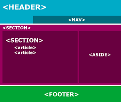

Borrador del tema Etiquetas semanticas, listas y enlaces

Las etiquetas semánticas ayudan a definir la estructura del documento
y permiten que las páginas web sean mejor indexadas por los buscadores.
Una etiqueta se califica como semántica si nos informa sobre lo que trata
su contenido, su uso es bastante simple e intuitivo.
Las listas y los enlaces tienen algunos requisitos
básicos en cuanto al estilo y a las expectativas de los usuarios
a la hora de interactuar en una página web. Si son mal hechos pueden
arruinar la experiencia que tendrá el usuario cuando utilice la web porque la gente
deberá detenerse a pensar dónde debe hacer clic. En el peor de los casos, el usuario
no sabrá determinar ni siquiera qué elementos de la página son enlaces o listas.
ReferenciasAPA
HTML5, etiquetas semánticas. (2000). HTML5.
https://www.aulaclic.es/articulos/html5-semantica_1.html#:%7E:text=
Las%20etiquetas%20sem%C3%A1nticas%20ayudan%20a,lo%20que%20trata%20su%20contenido.
Catalunya, U. O. (2013). CSS - Estilos de listas y enlaces. listas y enlaces.
https://mosaic.uoc.edu/ac/le/es/m6/ud6/index.html